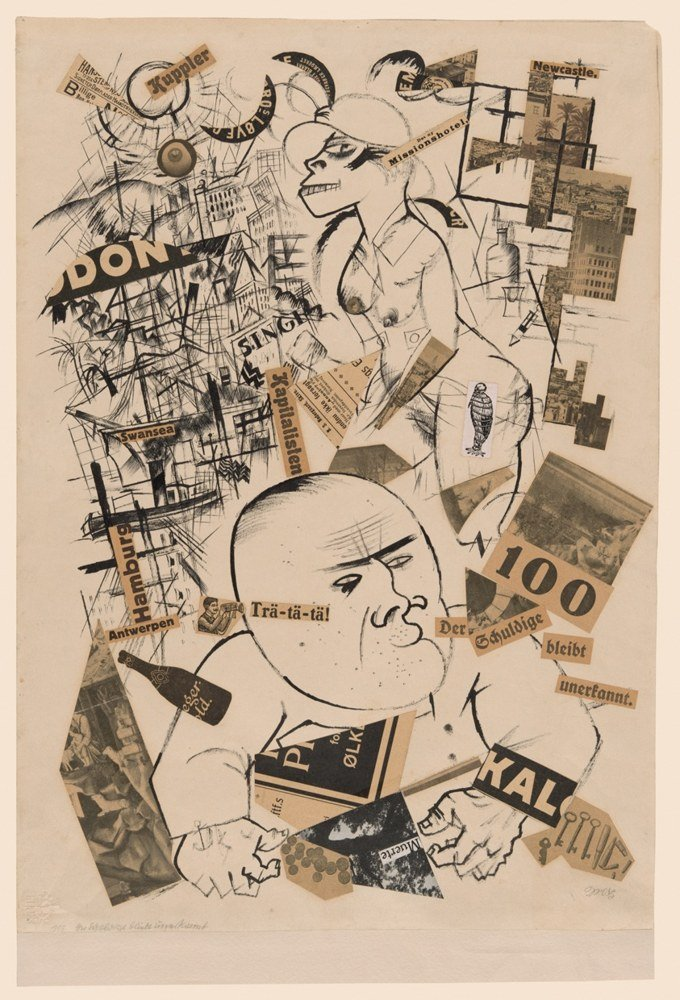

The Guilty One Remains Unknown
George Grosz · 1919 · Collage of pen and brush and black ink, and cut and pasted newspaper and other printed papers, laid down on cream wove paper · 53.8 × 35.9 cm · Art Institute of Chicago
In copyright. Look and learn: shown for study, not for download.
Grosz pasted cut newspaper and other printed papers into this ink drawing in 1919, the year he was arrested during the Spartacist uprising and escaped with false identity papers. It was shown at the First International Dada Fair in Berlin in 1920, which he helped organise, and it was reproduced in Léon Bazalgette's 1926 book on him. The German title is written in pencil at lower left, with the number 115.